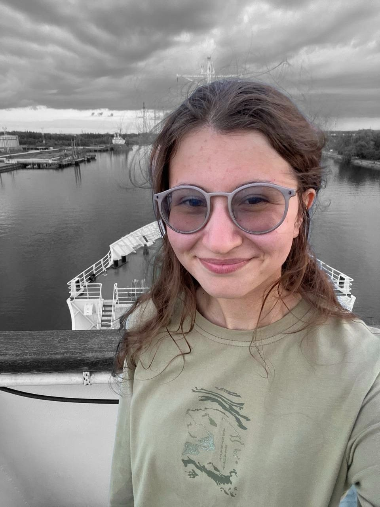
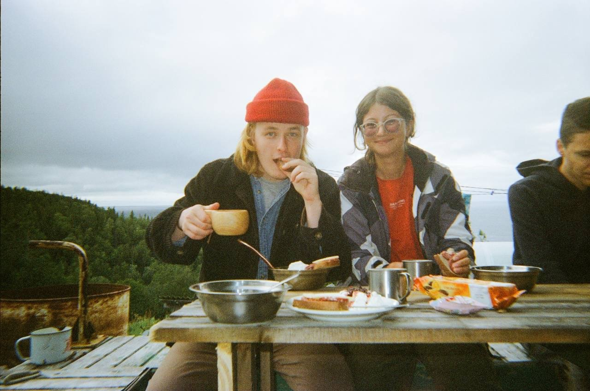
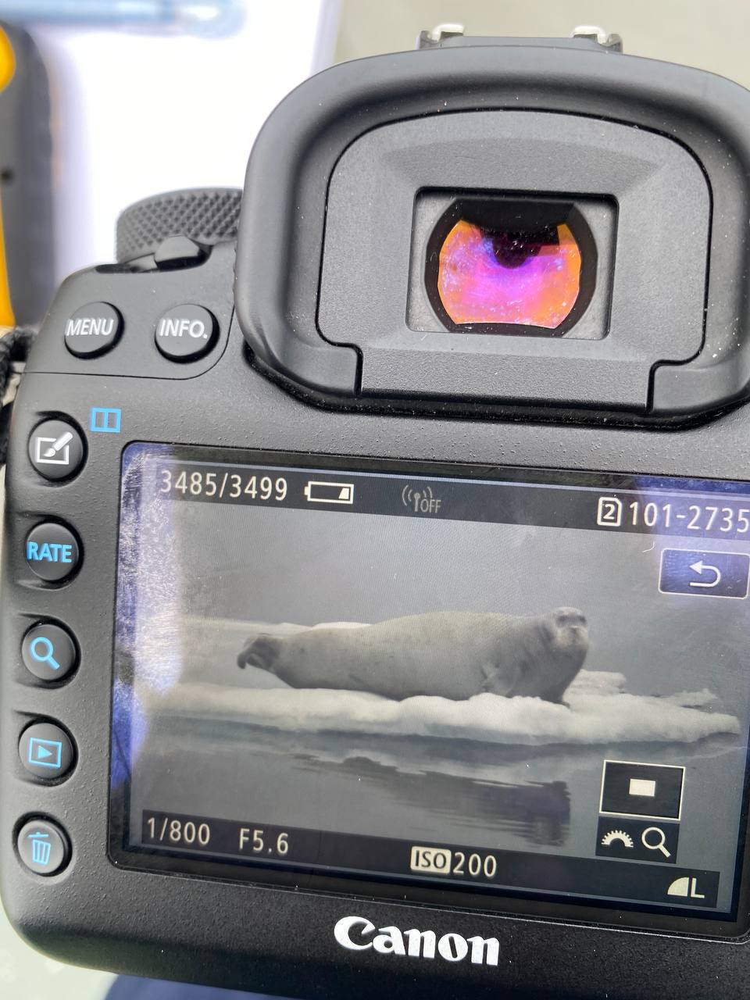

География экспедицийExpedition Geography
Наведите курсор или коснитесь точки, чтобы узнать, что там происходило Hover or tap a point to see what happened there
Опыт и экспедицииExperience & Expeditions
Career & Fieldwork
Опыт работыWork Experience
ЛаборантLaboratory Assistant
Институт океанологии им. П.П. Ширшова РАН P.P. Shirshov Institute of Oceanology, Russian Academy of Sciences
Об институтеAbout the institute
Институт океанологии им. П.П. Ширшова РАН – головной институт морских исследований России, основанный в 1946 году. Ведёт комплексные исследования Мирового океана – от физики и химии вод до геологии дна и биологии морских экосистем. Обладает собственным научным флотом, включая НИС «Академик Мстислав Келдыш», и участвовал в десятках полярных и глубоководных экспедиций, в том числе с погружениями к «Титанику» на аппаратах «Мир».
The P.P. Shirshov Institute of Oceanology, Russian Academy of Sciences, is Russia's leading marine research institute, founded in 1946. It conducts comprehensive research of the World Ocean, ranging from physical and chemical oceanography to seafloor geology and marine ecosystem biology. It operates its own research fleet, including R/V Akademik Mstislav Keldysh, and has taken part in dozens of polar and deep-sea expeditions, including dives to the Titanic wreck aboard the Mir submersibles.
Спектрограмма контакт-крика белухи — «морской канарейки» Contact-call spectrogram of a beluga whale — the “sea canary”
Полевые экспедицииField Expeditions
Учёт черноморских дельфиновBlack Sea Dolphin Population Survey
Благотворительный фонд «Природа и Люди», Анапа Nature and People Charity Foundation, Anapa
Полевой учёт численности черноморских дельфинов (афалина, белобочка, азовка) в прибрежных водах Анапы. Field survey of Black Sea dolphin numbers (bottlenose dolphin, common dolphin, harbour porpoise) in the coastal waters off Anapa.
Cetacean SurveyО фондеAbout the foundation
«Природа и Люди» — российский благотворительный фонд, поддерживающий проекты по изучению и охране дикой природы, включая мониторинг морских млекопитающих Чёрного моря и помощь попавшим в беду животным.
Nature and People is a Russian charitable foundation supporting wildlife research and conservation projects, including monitoring of Black Sea marine mammals and assistance to animals in distress.
95-й рейс НИС «Академик Мстислав Келдыш»95th voyage of R/V Akademik Mstislav Keldysh
Marine Mammals and Birds Observer
Попутные судовые наблюдения морских млекопитающих и птиц. Incidental shipboard observations of marine mammals and birds.
Marine Mammals and Birds ObserverО суднеAbout the vessel
«Академик Мстислав Келдыш» построен в 1980 году в Финляндии (верфь Hollming, г. Раума) и принадлежит Институту океанологии им. П.П. Ширшова РАН. Длина корпуса судна – 122 м, на борту – 17 научных лабораторий и два глубоководных обитаемых аппарата «Мир», способных погружаться на глубину до 6 км. Это одно из крупнейших научно-исследовательских судов, «плавучих институтов» России.
R/V Akademik Mstislav Keldysh was built in 1980 in Finland (Hollming shipyard, Rauma) and belongs to the P.P. Shirshov Institute of Oceanology, Russian Academy of Sciences. The vessel is 122 m long and carries 17 research laboratories and two Mir deep-sea manned submersibles, capable of diving to depths of up to 6 km. It is one of Russia's largest research vessels, a “floating institute”.
Экспедиция на Соловецкий архипелагExpedition to the Solovetsky Archipelago
Полевые наблюденияField observations
Наблюдение за социо-половым поведением белух (Delphinapterus leucas). Observing the socio-sexual behaviour of beluga whales (Delphinapterus leucas).
FieldworkО местеAbout the location
Мыс Белужий на западном берегу Большого Соловецкого острова – место летнего скопления беломорской белухи, самой мелкой популяции вида в России (длина тела около 3,1 м; соловецкое стадо – порядка 80 особей). Лаборатория морских млекопитающих Института океанологии им. П.П. Ширшова РАН ведёт здесь программу «Белуха – белый кит», изучая биологию, социальную структуру и акустику вида. Архипелаг и прилегающая акватория входят в состав охраняемой территории Соловецкого музея-заповедника.
Cape Beluzhy on the western shore of Bolshoy Solovetsky Island is a summer gathering site for the White Sea beluga, the smallest beluga population in Russia (body length about 3.1 m; the Solovetsky herd numbers roughly 80 individuals). The Marine Mammal Laboratory of the P.P. Shirshov Institute of Oceanology, Russian Academy of Sciences, runs the “Beluga – White Whale” programme here, studying the species' biology, social structure, and acoustics. The archipelago and its adjacent waters form part of the protected territory of the Solovetsky State Museum-Reserve.


